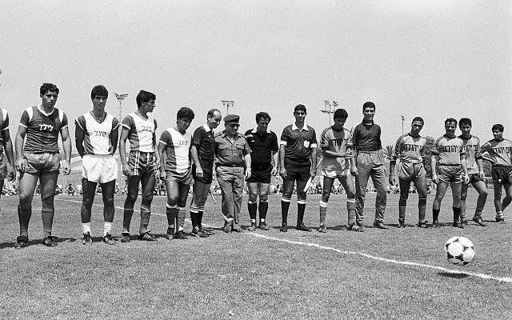

Футбол
Футбол - найпопулярніший у світі командний вид спорту, мета якого: забити м'яч у ворота суперника більше число раз, ніж це зробить команда опонента у встановлений час. М'яч у ворота можна забивати ногами або будь-якими іншими частинами тіла (окрім рук)
Зміст
- Футбол
- Історія виникнення футболу
- Основні правила футболу
- Розмір футбольного поля
- М'яч для футболу
- Футбольна форма
- Стандартні положення у футболі
- Суддівство у футболі
- Змагання
- Футбольні структури
Історія виникнення та розвитку футболу
Точна дата виникнення футболу не відома, але можна з упевненістю сказати, що історія футболу налічує не одне століття і торкнулася чимало країн. Ігри з м'ячем були популярні на всіх континентах, про це говорять численні знахідки археологів. У Стародавньому Китаї існувала гра, відома як «Цуцзюй», згадки про яку були датовані другим століттям до нашої ери. За заявою ФІФА в 2004 році, саме вона вважається найбільш древньою з попередників сучасного футболу.
В Японії подібна гра носила назву «Кемарі» (в деяких джерелах «Кенатт»). Перша згадка про Кемарі зустрічається в 644 році. У кемарі грають і в наш час в синтоїстських святилищах під час фестивалів.
В Австралії м'ячі робили зі шкур щурів, сечових міхурів великих тварин, з скрученого волосся. На жаль, правила гри не збереглися.
У Північній Америці також був предок футболу, гра називалася «pasuckuakohowog», що означає «вони зібралися, щоб пограти в м'яч ногами». Зазвичай ігри проходили на пляжах, м'яч намагалися забити у ворота шириною близько півмилі, саме ж поле було в два рази довше. Число учасників гри доходило до 1000 чоловік.
Основні правила футболу
Перші правила гри в футбол були введені 7 грудня 1863 року Футбольною асоціацією Англії. Сьогодні правила футболу встановлює Міжнародна рада футбольних асоціацій (IFAB), до якої входять ФІФА (4 голоси), а також представники англійської, шотландської, північноірландської та валлійської футбольних асоціацій. Остання редакція офіційних футбольних правил датована 1 червня 2013 року і складається з 17 правил, ось короткий зміст:
- Правило 1: Суддя
- Правило 2: Помічники судді
- Правило 3: Початок та відновлення гри
- Правило 4: М'яч у грі та не у грі
- Правило 5: Визначення взяття воріт
- Правило 6: Положення "Поза грою"
- Правило 7: Порушення правил гри та недисциплінована поведінка гравців
- Правило 8: Штрафний та вільний удари
- Правило 9: 11-метровий удар
- Правило 10: Викидання м'яча
- Правило 11: Удар від воріт
- Правило 12: Кутовий удар
Кожна футбольна команда повинна складатися максимум з одинадцяти гравців (саме стільки може перебувати одночасно на полі), один з яких воротар і він же єдиний гравець, якому дозволено грати руками в рамках карного майданчика біля своїх воріт.
Футбольний матч складається з двох таймів тривалістю по 45 хвилин кожен. Між таймами передбачений 15 хвилинну перерву на відпочинок, після якого команди міняються воротами. Це робиться для того, щоб команди були в рівних умовах.
Футбольну гру виграє команда, що забила більшу кількість голів у ворота суперника.
Якщо команди закінчили матч з однаковим рахунком голів, то фіксується нічия, або призначаються два додаткові тайми по 15 хвилин. Якщо додатковий час закінчився нічиєю, то призначається серія післяматчевих пенальті.
Правила пенальті у футболі
Одинадцятиметровий удар або пенальті є найсерйознішим покаранням у футболі і виконується з відповідної позначки. При виконанні 11-метрового удару в воротах обов'язково повинен стояти воротар.
Пробиття післяматчевих пенальті у футболі відбувається за такими правилами: команди проводять по 5 ударів по воротах суперника з відстані 11 метрів, всі удари повинні проводитися різними гравцями. Якщо після 5 ударів рахунок по пенальті рівний, то команди продовжують пробивати по одній парі пенальті, поки не буде виявлено переможця.
Положення "Поза грою" у футболі
Вважається, що гравець знаходиться в положенні «поза грою» або в офсайді, якщо він знаходиться ближче до лінії воріт суперника, ніж м'яч і передостанній гравець суперника, включаючи воротаря.
Для того щоб не опинитися в офсайді, гравцям необхідно дотримуватися наступних правил:
- забороняється втручатися в гру (торкання м'яча, який йому передали або який торкнувся партнера по команді)
- забороняється заважати супернику
- забороняється отримувати перевагу завдяки своїй позиції (торкання м'яча, який відскакує від стійки, перекладини воріт або суперника)
Гра рукою у футболі
Футбольні правила дозволяють польовим гравцям торкатися м'яча будь-якою частиною тіла, крім рук. За гру рукою команді призначається штрафний удар або 11-метровий удар, який виконує гравець команди суперника.
До правил гри рукою у футболі відносяться ще два дуже важливих пункти:
- випадкове потрапляння м'яча в руку не є порушенням правил
- інстинктивний захист від м'яча не є порушенням правил
Жовта та червона картки
Жовта і червона картки є знаками, які демонструє суддя гравцям за порушення правил і неспортивну поведінку.
Жовта картка носить попереджувальний характер і дається гравцеві в наступних випадках:
- за навмисну гру рукою;
- за затягування часу;
- за зрив атаки;
- за удар до свистка / вихід зі стінки (штрафний удар);
- за удар після свистка;
- за грубу гру;
- за неспортивну поведінку;
- за суперечки з арбітром;
- за симуляцію;
- за вихід або вхід у гру без дозволу арбітра
Червона картка у футболі демонструється суддею за особливо грубі порушення або неспортивну поведінку. Гравець, який отримав червону картку, повинен покинути поле до кінця матчу.
Розмір футбольного поля та лінії розмітки
Стандартне поле для великого футболу являє собою прямокутний майданчик, в якому лінії воріт (лицьові лінії) обов'язково коротші за бічні. Далі ми розглянемо параметри футбольного поля.
Розмір футбольного поля в метрах чітко не регламентований, але є певні граничні показники. Для проведення матчів національного рівня стандартна довжина футбольного поля від воріт до воріт повинна бути в межах 90-120 метрів, а ширина 45-90 метрів. Площа футбольного поля коливається в межах від 4050 м2 до 10800 м2. Для порівняння 1 гектар = 10 000 м2. Для міжнародних матчів довжина бічних ліній не повинна виходити за межі інтервалу 100-110 метрів, а ліній воріт за межі 64-75 метрів. Існують рекомендовані FIFA габарити футбольного поля 105 на 68 метрів (площа 7140 квадратних метрів).
Розмітку поля виконують однаковими лініями, ширина розмітки не повинна перевищувати 12 сантиметрів (лінії входять в площі, які вони обмежують). Бічну лінію або край футбольного поля прийнято називати «брівкою».
Розмітка футбольного поля
- Середня лінія - лінія, яка ділить поле на дві рівні половини. Посередині середньої лінії знаходиться центр поля діаметром 0,3 метра. Окружність навколо центру поля дорівнює 9,15 метрів. Ударом або передачею з центру поля починаються обидва тайми матчу, а також додатковий час. Після кожного забитого гола, м'яч також встановлюється на центр поля.
- Лінія воріт у футболі - проводиться на газоні паралельно перекладині.
- Площа футбольних воріт - лінія, яка проводиться на відстані 5,5 метрів від зовнішньої сторони стійки воріт. Перпендикулярно лінії воріт проводяться дві смуги довжиною 5,5 метрів, спрямовані вглиб поля. Їх кінцеві точки з'єднуються лінією, паралельною лінії воріт.
- Штрафна площа - з точок на відстані 16,5 м від внутрішньої сторони кожної стійки воріт, під прямим кутом до лінії воріт, углиб поля проводяться дві лінії. На відстані 16,5 м ці лінії з'єднані іншою лінією, паралельною лінії воріт. По центру лінії воріт і на відстані 11 м від неї, наноситься одинадцятиметровa відмітка, розмічається вона суцільним колом діаметром 0,3 метра. В межах штрафного майданчика воротар може грати руками.
- Кутові сектори - дуги радіусом 1 метр з центром в кутах футбольного поля. Дана лінія утворює обмежену площу для виконання кутових ударів. У кутах поля встановлюються прапори висотою не менше 1,5 метра і розміром полотнa 35х45 сантиметрів.
Розмітку поля здійснюють за допомогою ліній, ширина яких повинна бути однакова і не перевищувати 12 сантиметрів. На зображенні нижче схема розмітки футбольного поля.
Ворота для футболу
Ворота розташовуються точно посередині лінії воріт. Стандартний розмір воріт у футболі наступний:
Діаметр стійок і поперечини не повинен перевищувати 12 сантиметрів. Ворота виготовляються з дерева або металу і пофарбовані в білий колір, а також мають в поперечному перерізі форму прямокутника, еліпса, квадрата або круга.
Сітка для воріт у футболі повинна відповідати розмірам воріт і повинна бути міцною. Прийнято використовувати футбольні сітки наступного розміру 2,50 х 7,50 х 1,00 х 2,00 м.
Конструкція футбольного поля
Еталон конструкції футбольного поля виглядає наступним чином:
- Трав'яний газон
- Підкладка з піску і щебеню
- Труби обігріву
- Труби дренажу
- Труби аерації
Покриття для футбольного поля може бути натуральним або штучним. Трав'яне покриття вимагає додаткового догляду, а саме поливу і добрив. Трав'яне покриття не дозволяє проводити більше двох ігор в тиждень. Траву на поле привозять в спеціальних рулонах дерну. Дуже часто на футбольному полі можна побачити траву двох кольорів (смугасте поле), так виходить, через особливості догляду за газоном. При стрижці газону машина спочатку їде в одну сторону, а потім в іншу і трава лягає в різні боки (різноспрямована стрижка газону). Робиться це для зручності визначення відстаней і офсайдів, а також для краси. Висота трави на футбольному полі зазвичай становить 2,5 - 3,5 см. Максимальна швидкість м'яча у футболі на поточний момент - 214 км / ч. Штучне покриття для футбольного поля - це килим із синтетичного матеріалу. Кожна травинка - це не просто смужка пластмаси, а виріб складної форми. Для того щоб штучний газон був придатний для гри, його засипають наповнювачем з піску і гумової крихти
М'яч для футболу
Яким же м'ячем грають в футбол? Професійний футбольний м'яч складається з трьох основних компонентів: камери, підкладки та покришки. Камера зазвичай виготовляється з синтетичного бутилу або натурального латексу. Підкладка - це внутрішня прошарок між покришкою і камерою. Підкладка безпосередньо впливає на якість м'яча. Чим вона товщі, тим м'яч якісніше. Зазвичай підкладку роблять з поліестеру або спресованого бавовни. Покришка складається з 32 синтетичних водонепроникних шматків, 12 з яких мають п'ятикутну форму, 20 - шестикутну.
Розмір м'яча для футболу:
- довжина кола - 68-70 см;
- вага - не більше 450 гр.
Швидкість польоту м'яча у футболі досягає 200 км / ч.
Футбольна форма
Обов'язковими елементами комплекту спортивної футбольної форми гравця є:
- Сорочка або футболка з рукавами.
- Труси. Якщо використовуються підтрусники, то вони повинні бути такого ж кольору.
- Гетри.
- Щитки. Повинні бути повністю закриті гетрами і забезпечувати належний рівень захисту.
- Бутси.
Воротарська футбольна форма повинна відрізнятися за кольором від форми інших гравців та суддів.
Гравці не мають права надягати ніякої екіпіровки, яка може бути небезпечною для них або для інших гравців, наприклад ювелірні вироби чи наручний годинник.
Стандартні положення у футболі
- Початковий удар. Розіграш м'яча у футболі проводиться в трьох випадках: на початку зустрічі, на початку другого тайму і після забитого гола. Всі гравці команди, що виробляє початковий удар, повинні знаходитися на своїй половині поля, а їх суперники - на відстані не менше дев'яти метрів від м'яча. Гравець, що проводить початковий удар не має права повторно торкнутися м'яча раніше, ніж це зроблять інші гравці.
- Удар від воріт і введення м'яча в гру воротарем. Введення м'яча в гру після його виходу за лінію воріт (збоку від стійки або над поперечною) з вини гравця атакуючої команди.
- Вкидання м'яча з-за бокової лінії. Проводиться польовим гравцем після того, як м'яч перетнув бічну лінію і покинув межі поля. Вкидати м'яч треба з того місця, де він опинився в «ауті». Гравець, що виконує прийом, повинен стояти обличчям до поля на бічній лінії або за нею. У момент кидка, обидві ступні гравця повинні торкатися землі. М'яч вводиться в гру без сигналу судді.
- Кутовий удар. Введення м'яча в гру з кутового сектора. Є покаранням для гравців команди, що обороняється, які вибили м'яч за лінію воріт.
- Штрафний і вільний удари. Покарання за умисне торкання м'яча рукою або застосування грубих прийомів проти гравців команди суперника.
- Одинадцятиметровий удар (пенальті).
- Положення «поза грою» (офсайд).
- Хронометраж матчу.
- Запис подій матчу.
- Забезпечення відповідності м'яча вимогам.
- Забезпечення екіпіровки гравців вимогам.
- Забезпечення відсутності на полі сторонніх осіб.
- Забезпечення догляду / виносу за межі поля травмованих гравців.
- Надання відповідним органам рапорт про матч, що включає інформацію по всім прийнятим дисциплінарним заходам щодо гравців і / або офіційних осіб команд, а також по всім іншим інцидентам, що стався до, під час або після матчу.
- Зупинити, тимчасово перервати або припинити матч при будь-якому порушенні правил, сторонньому втручанні, травмуванні гравців;
- Вживати заходів щодо офіційних осіб команд, що ведуть себе некоректно;
- Продовжити гру до моменту, коли м'яч вийде з гри в разі, якщо гравець, на його думку, отримав лише незначну травму;
- Продовжити гру, коли команда, проти якої було вчинено порушення, отримує вигоду від такої переваги (залишилася з м'ячем), і покарати за первинне порушення, якщо надана перевагою команда ним не скористалася;
- Покарати гравця за більш серйозне порушення правил у разі, коли він одночасно здійснює більше одного порушення;
- Діяти на підставі рекомендації своїх помічників і резервного судді.
- Чемпіонат світу - головне міжнародне змагання з футболу. Чемпіонат проводиться один раз на чотири роки, участь в турнірі можуть брати чоловічі національні збірні країн-членів FIFA всіх континентів.
- Кубок конфедерацій - футбольне змагання серед національних збірних, яке проводиться за рік до Чемпіонату світу. Проводиться в країні-організаторі Чемпіонату світу. У чемпіонаті беруть участь 8 команд: переможці континентальних чемпіонатів, переможець чемпіонату світу і команда країни-організатора.
- Олімпійські ігри
- Клубний чемпіонат світу з футболу - щорічне змагання між найсильнішими представниками шести континентальних конфедерацій.
- Чемпіонат Європи - головне змагання національних збірних під керівництвом УЄФА. Чемпіонат проводиться раз на чотири роки.
- Ліга чемпіонів УЄФА - найпрестижніший щорічний європейський клубний футбольний турнір.
- Ліга Європи УЄФА - другий за значимістю турнір для європейських футбольних клубів, що входять до УЄФА.
- Суперкубок УЄФА - чемпіонат з одного матчу, в якому зустрічаються переможці Ліги чемпіонів УЄФА і Ліги Європи УЄФА попереднього сезону.
- Кубок Америки - чемпіонат, який проводиться під егідою КОНМЕБОЛ серед національних збірних країн регіону.
- Кубок Лібертадорес - кубок названий на честь історичних лідерів війни за незалежність іспанських колоній в Америці. Проводиться серед кращих клубів країн регіону.
- Південноамериканський кубок - другий за значимістю клубний турнір Південної Америки після Кубка Лібертадорес.
- Рекопа Південної Америки - аналог континентального Суперкубка. У турнірі беруть участь переможці двох найважливіших клубних турнірів - Кубка Лібертадорес і Південноамериканського кубка попереднього сезону.
- Золотий кубок КОНКАКАФ - футбольний турнір для країн Північної, Центральної Америки і Карибського басейну.
- Ліга чемпіонів КОНКАКАФ - щорічний футбольний чемпіонат серед кращих клубів країн Північної і Центральної Америки і Карибського басейну.
- CONCACAF (СОnfederation of North, Central American and Caribbean Association Football) - конфедерація футболу Північної і Центральної Америки і країн Карибського басейну
- CONMEFBOL (CONfederacion sudaMEricana de FutBOL) - Південноамериканська конфедерація футболу
- UEFA (Union of European Football Associations) - союз європейських футбольних асоціацій
- CAF (Confederation of African Football) - Африканська конфедерація футболу
- AFC (Asian Football Confederation) - Азіатська конфедерація футболу
- OFC (Oceania Football Confederation) - конфедерація футболу Океанії
Суддівство
Судді стежать за дотриманням встановлених правил на футбольному полі. На кожен матч призначається основний суддя і два помічники.
До обов'язків судді відноситься:
Права судді:
Футбольні змагання
Змагання організовуються федерацією. Для кожного турніру складається власний регламент, в якому зазвичай прописується склад учасників, схема турніру, правила визначення переможців.
FIFA
Національні збірні
Клубні
UEFA
Національні збірні
Клубні
CONMEBOL
Національні збірні
Клубні
CONCACAF
Національні збірні
Клубні
Футбольні структури
Основний футбольної структурою є FIFA (Fédération internationale de football association), розташована в Цюріху, Швейцарія. Вона займається організацією міжнародних турнірів світового масштабу.
Континентальні організації: